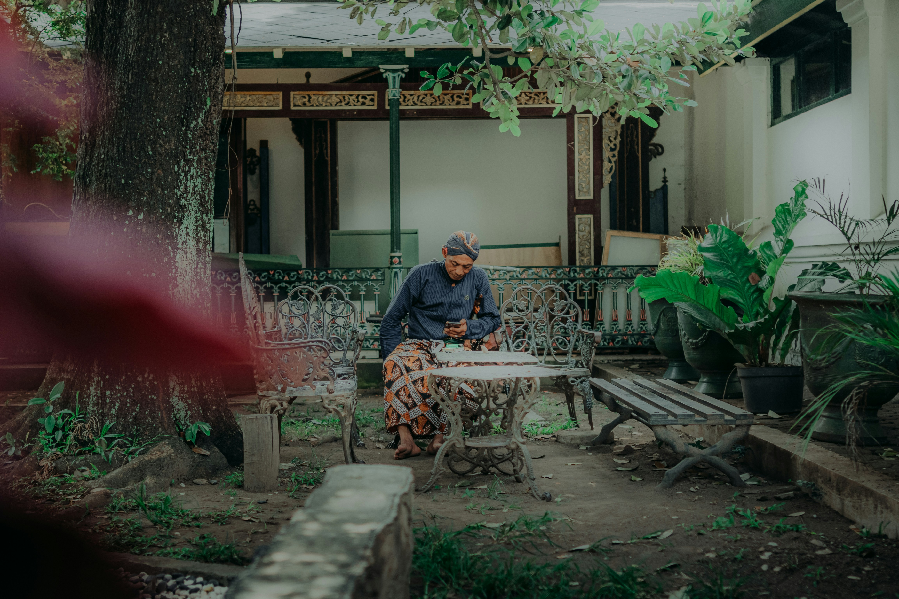

Kota Yogyakarta

Yogyakarta, atau yang sering disingkat menjadi Jogja, adalah salah satu kota di
Indonesia yang memiliki status istimewa sebagai daerah otonomi khusus. Kota ini berada
di bagian selatan Pulau Jawa dan merupakan ibu kota dari Daerah Istimewa Yogyakarta
(DIY). Dikenal sebagai pusat kebudayaan dan seni tradisional Jawa, Yogyakarta adalah
tempat di mana budaya, tradisi, serta nilai-nilai luhur Jawa masih sangat dijunjung
tinggi hingga saat ini.
Yogyakarta memiliki suasana yang khas dengan nuansa keagamaan, tradisi, dan kehidupan
masyarakat yang harmonis. Meskipun menjadi pusat urbanisasi, Jogja tetap mempertahankan
atmosfer tradisionalnya. Selain itu, Yogyakarta juga terkenal sebagai kota pendidikan
atau "Kota Pelajar", karena banyaknya perguruan tinggi berkualitas, salah satunya
Universitas Gadjah Mada (UGM), yang menarik ribuan mahasiswa dari seluruh Indonesia.
Yogyakarta merupakan salah satu daerah istimewa di Indonesia dengan sejarah yang kaya dan
unik. Kota ini dikenal sebagai pusat kebudayaan Jawa, dan memiliki status khusus sebagai
Daerah Istimewa Yogyakarta (DIY) sejak era penjajahan Belanda.
Sejarah Yogyakarta bermula ketika Sultan Agung dari Mataram mendirikan kerajaan di
daerah tersebut pada abad ke-17. Setelah perjanjian Giyanti pada 1755, kerajaan Mataram
terpecah menjadi dua, yaitu Kesultanan Yogyakarta dan Kasunanan Surakarta. Sultan
Hamengkubuwono I menjadi raja pertama Kesultanan Yogyakarta. Kota ini menjadi pusat
perlawanan melawan kolonialisme, termasuk pada masa perjuangan kemerdekaan Indonesia, di
mana Yogyakarta berperan sebagai ibu kota negara pada 1946-1949. Hingga kini, Yogyakarta
masih mempertahankan tradisi dan budaya Jawa dengan sistem pemerintahan berbasis monarki
melalui kepemimpinan Sultan yang juga menjadi Gubernur.
Sejarah Kota Yogyakarta
Sejarah Yogyakarta terkait erat dengan Kerajaan Mataram Islam dan Kesultanan Yogyakarta.
Berikut ini adalah beberapa fase penting dalam sejarah Yogyakarta:
1. Kerajaan Mataram Islam
Yogyakarta dahulu merupakan bagian dari Kerajaan Mataram Islam yang didirikan pada abad
ke-16 di bawah pemerintahan Sultan Agung. Pada masa kejayaannya, Kerajaan Mataram
menguasai sebagian besar Pulau Jawa dan dikenal karena pengaruh budaya dan politiknya
yang kuat. Sultan Agung adalah raja yang dikenal bijaksana dan berperan dalam memperkuat
kesultanan melalui ekspansi dan diplomasi.
2. Perjanjian Giyanti (1755)
Setelah masa kemunduran Mataram Islam, terjadilah Perjanjian Giyanti pada tahun 1755
yang memecah Kerajaan Mataram menjadi dua: Kasunanan Surakarta dan Kesultanan
Yogyakarta. Sultan Hamengkubuwono I menjadi pemimpin pertama Kesultanan Yogyakarta, yang
kemudian memindahkan pusat pemerintahannya ke Yogyakarta dan mendirikan Kraton
Yogyakarta sebagai pusat kekuasaan dan kebudayaan.
3. Kolonialisme Belanda
Pada masa penjajahan Belanda, Yogyakarta tetap mempertahankan statusnya sebagai kerajaan
yang berdaulat, meskipun berada di bawah pengaruh Hindia Belanda. Kesultanan Yogyakarta
memiliki peran penting dalam perjuangan melawan penjajahan, terutama dalam menjaga
identitas dan kebudayaan Jawa.
4. Peran Yogyakarta dalam Kemerdekaan Indonesia
Setelah Proklamasi Kemerdekaan Indonesia pada tahun 1945, Yogyakarta memiliki peran yang
sangat penting dalam perjuangan kemerdekaan. Yogyakarta menjadi ibu kota Republik
Indonesia sementara dari tahun 1946 hingga 1949 setelah Jakarta diduduki oleh Belanda.
Sultan Hamengkubuwono IX, yang saat itu menjadi raja, mendukung penuh kemerdekaan
Indonesia dan memfasilitasi perlawanan terhadap penjajah.
5. Status Daerah Istimewa Yogyakarta
Setelah kemerdekaan Indonesia, Kesultanan Yogyakarta bersama Pakualaman dianugerahi
status "Daerah Istimewa" oleh pemerintah Indonesia sebagai penghargaan atas dukungan
Sultan dan rakyat Yogyakarta dalam perjuangan kemerdekaan. Hingga kini, Yogyakarta tetap
memiliki status otonomi khusus di mana Sultan yang memerintah juga menjadi Gubernur,
sementara Pakualam bertindak sebagai Wakil Gubernur.
Kebudayaan

Candi Borobudur Meskipun terletak sedikit di luar kota Yogyakarta, Candi Borobudur adalah salah satu tujuan wisata paling populer. Ini adalah candi Buddha terbesar di dunia dan situs Warisan Dunia UNESCO. Setiap tahunnya, ribuan pengunjung datang untuk menyaksikan keindahan arsitektur serta nilai historis candi ini.

Candi Prambanan Candi Hindu terbesar di Indonesia ini dikenal dengan keindahan arsitekturnya yang menjulang tinggi. Kompleks candi ini didedikasikan untuk dewa-dewa Hindu: Brahma, Wisnu, dan Siwa. Pertunjukan Ramayana Ballet juga sering diadakan di sini pada malam hari, menggabungkan seni tari dan drama.
Pantai Parangtritis Pantai ini adalah salah satu destinasi wisata alam paling terkenal di Yogyakarta. Terletak di selatan Yogyakarta, pantai ini memiliki ombak besar yang khas dan mitos yang kuat terkait dengan Nyai Roro Kidul, Ratu Pantai Selatan. Pengunjung sering datang untuk menikmati matahari terbenam dan suasana mistis di pantai ini.

Keraton Yogyakarta Keraton Yogyakarta tidak hanya berfungsi sebagai tempat tinggal Sultan, tetapi juga menjadi objek wisata yang memperlihatkan sejarah dan budaya Kesultanan Yogyakarta. Wisatawan dapat berkunjung ke museum dan melihat berbagai koleksi pusaka dan peninggalan sejarah di sana.
Malioboro Jalan Malioboro adalah jantung wisata belanja dan kuliner di Yogyakarta. Di sepanjang jalan ini, wisatawan dapat menemukan berbagai toko yang menjual batik, kerajinan tangan, dan oleh-oleh khas Yogyakarta. Malioboro juga menjadi tempat yang ideal untuk merasakan atmosfer Yogyakarta yang ramah dan dinamis.